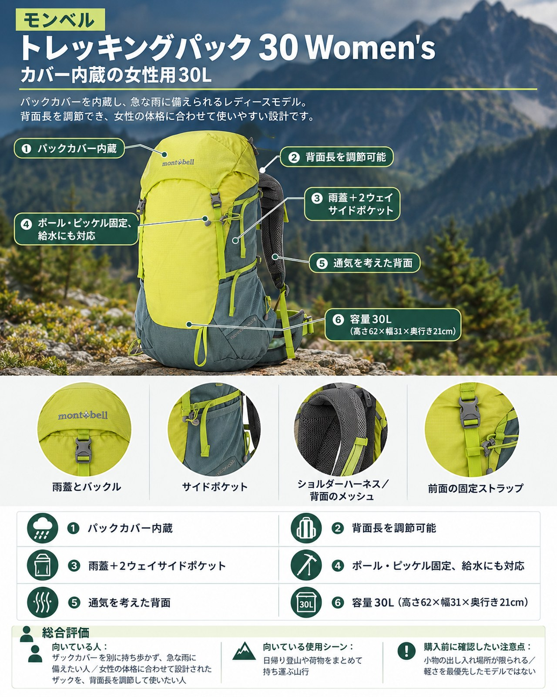

雨の多い週の前半は、天気の回復を待って日帰りで歩く計画を立てる人も多いはずです。ただ、晩秋の入口のこの時期は、雨具に加えて防寒着も持つため、日帰りでも荷物が増えがちです。急な雨にも備えたい、女性向けの中型ザックを探している人に向くのが、モンベルの「トレッキングパック 30 Women's」（品番#1133523）です。メーカーは本品を「軽量でシンプルな構造ながらも、必要な機能を備えた中型バックパックの女性用モデル」と紹介しており、日帰りのトレッキングや1泊2日の小屋泊まり登山を想定しています。
基本スペック
※価格・仕様は2026年10月19日時点のモンベル公式オンラインショップの表示です。
| 項目 | 内容 |
|---|---|
| 商品名 | トレッキングパック 30 Women's |
| 品番 | #1133523 |
| 容量 | 30L（高さ62×幅31×奥行き21cm） |
| 重量 | 1.08kg |
| 本体 | 100デニール・バリスティック®ナイロン・リップストップ［ウレタン・コーティング］ |
| 底部 | 210デニール・バリスティック®ナイロン・リップストップ［ウレタン・コーティング］ |
| 背面 | 3Dメッシュ |
| 背面寸法 | 44〜52cm（ベルクロで調節） |
| カラー | ライトグリーン、ネイビー |
| 価格 | 19,500円（税込） |
パックカバーを内蔵
パックカバーが内蔵されていて、別に用意しなくても急な雨に対応できます。公式ページによると、カバーはショルダーハーネスのホックに固定でき、背面側に雨が入りにくい作りです。雨の予報が続く週や、天気が変わりやすい季節には、カバーを忘れる心配がないのは安心です。
背面長を自分に合わせられる
ショルダーハーネスの取り付け位置をスライドさせ、背面クッションの上端を背面長に合わせてベルクロで固定する方式です。背面寸法は44〜52cmの範囲で調節できます。モンベルの女性用パックは、日本人女性の肩幅や背面長などのデータをもとに設計され、身長145〜165cm程度の人に合うサイズとされています。
雨蓋と2ウェイサイドポケット
上部にはデルタリッド（雨蓋）があり、隠しポケットも備えます。サイドポケットはストレッチメッシュで、2方向から出し入れできます。ボトルや折りたたんだ地図など、よく使う物を入れておくのに便利です。
ポールやピッケルの固定、給水にも対応
フック付きコードでピッケルやトレッキングポールを固定でき、岩場などでポールを一時的に保持するポールループもあります。モンベルのトレールウォーターパックにも対応し、チューブ用のホールやチェストストラップのフックを使って装着します。
通気を考えた背面
背面は3Dメッシュで、保水しにくく通気性に優れたエアスルーバックパネルと、調節不要のスチールフレームを内蔵しています（公式の記載）。
デメリット・注意点
- 小物の出し入れの場所が限られる：公式ページの仕様欄には、ヒップベルトのポケットや、本体前面からの開口についての記載がありません。行動中に使う物は、サイドポケットや隠しポケットにまとめる工夫が必要です。
- 軽さを最優先したモデルではない：重量は1.08kgです。同じシリーズの40 Women'sは1.14kg・20,500円で、30 Women'sとの差は重量60g・価格1,000円です。荷物が多くなりそうなら、40Lとの比較も検討してよいでしょう。
- 背面寸法が合うかの確認が必要：調節範囲は44〜52cmです。範囲から外れる人は合わないことがあるので、購入前に店頭で背負って確かめましょう。
向いている人・向いていない人
◎向いている人
- ザックカバーを別に持ち歩かず、急な雨に備えたい人
- 女性の体格に合わせて設計されたザックを、背面長を調節して使いたい人
- 日帰り山行から1泊2日の小屋泊まりまで、1つの30Lザックで済ませたい人
△向いていない人
- ザックの軽さを最優先したい人
- ヒップベルトのポケットなど、歩きながら使える収納を重視する人
- 実際の使用者の評判を確かめてから選びたい人
まとめ
トレッキングパック 30 Women's は、パックカバーと雨蓋で雨に備えやすく、背面長も調節できる、女性用の30Lザックです。シンプルな作りで、日帰りから小屋泊まりまで使い方を選びません。雨の多い季節の日帰り登山用に、扱いやすい中型ザックを探している人は候補に入れてみてください。
この記事で紹介した商品
価格・重量・在庫は各ブランド公式サイトの記載（確認日つき）にもとづきます。商品を押すと、購入先を選べます。
この記事にはアフィリエイト広告が含まれます。リンク先での購入により、当サイトが報酬を受け取る場合があります。山行の前には、最新の気象とルートの状況を必ずご確認ください。